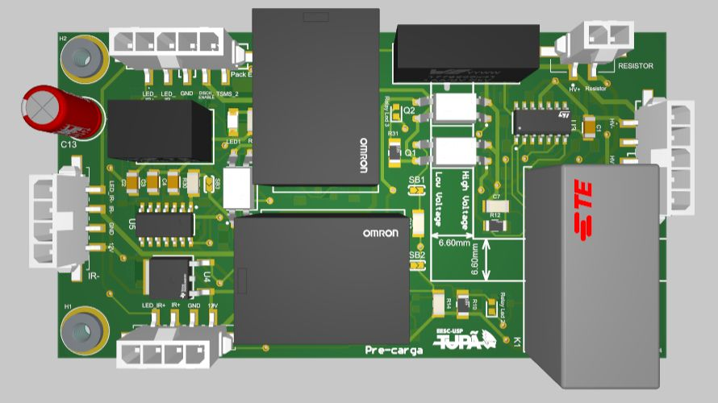

TX · PreCarga · EESC-USP Tupã
Precharge
Voltage comparison and relay sequencing for precharge.
Explore the board in 3D
Drag to rotate · Scroll to zoom
Board details
- Sensing
- Battery and DC bus voltage dividers
- Comparison
- LM324DT stages
- Control
- Optocouplers, relay drivers and delay circuitry
- Documentation
- Precharge, connectors and PCSHUT sheets